Contents
Mini-Project
Please note that the x-axis uses Hz instead of ω, with a range from 0 to fs/2, so that it makes more clear to understand
% In this code, we only keep order = 6, but we run a wide range of filters % order to show the difference % untiled.m is using translate wav to mp3, which allows us include these % audios to the poster
1) Data Reading
[audioData, fs] = audioread('SunshineSquare.wav'); time = (0:length(audioData)-1) / fs; % Time axis % Calculate frequency information n = length(audioData); freqAxis = linspace(0, fs/2, floor(n/2) + 1); % Frequency axis (Hz) audioFFT = fft(audioData); magnitudeFFT = abs(audioFFT(1:floor(n/2)+1)); % Plot waveform and frequency spectrum close all figure; subplot(3,1,1); plot(time, audioData); xlabel('Time (s)'); ylabel('Amplitude'); title('Waveform of SunshineSquare.wav'); grid on; subplot(3,1,2); plot(freqAxis, magnitudeFFT); xlabel('Frequency (Hz)'); ylabel('Magnitude'); title('Frequency Spectrum of SunshineSquare.wav'); subplot(3,1,3); plot(freqAxis, magnitudeFFT / max(magnitudeFFT)); xlabel('Frequency (Hz)'); ylabel('Magnitude'); title('Normalized Frequency Spectrum of SunshineSquare.wav'); grid on;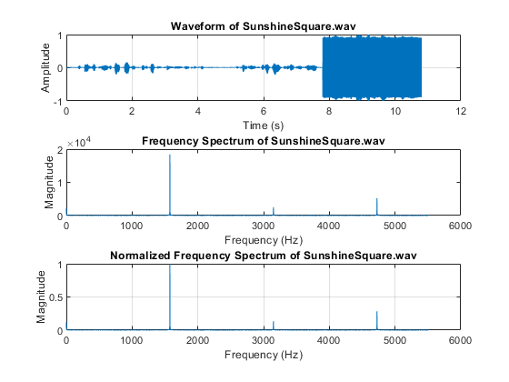
2) Use zeros
Optimized Zero Filter Design with Normalization
% Design zero filter H(z) with zeros at specified locations zeros = exp(1j * pi / 4 * [1, -1, 2, -2]); bb = poly(zeros); aa = 1; % Denominator coefficients (no poles) % Normalize filter coefficients [HH, ww] = freqz(bb, aa, 1024, fs); dcGain = max(abs(HH)); bb = bb / dcGain; close all figure; zplane(bb, aa); title('Pole-Zero Plot of Filter'); figure; plot(ww, abs(HH)/dcGain); xlabel('Frequency (Hz)'); ylabel('Magnitude'); title('Frequency Response of Normalized H(z)'); grid on; % Filter audio data audioData_zero_filter_result = filter(bb, aa, audioData); % Calculate frequency information of filtered signal freqAxis = linspace(0, fs/2, floor(n/2) + 1); filteredFFT = fft(audioData_zero_filter_result); magnitudeFilteredFFT = abs(filteredFFT(1:floor(n/2)+1)); figure; subplot(3,1,1); % Subplot 1: Waveform plot(time, audioData_zero_filter_result); xlabel('Time (s)'); ylabel('Amplitude'); title('Waveform after Normalized Zero Filter'); grid on; subplot(3,1,2); % Subplot 2: Frequency spectrum plot(freqAxis, magnitudeFilteredFFT); xlabel('Frequency (Hz)'); ylabel('Magnitude'); title('Frequency Spectrum after Normalized Zero Filter'); grid on; subplot(3,1,3); % Subplot 2: Frequency spectrum plot(freqAxis, magnitudeFilteredFFT / max(magnitudeFilteredFFT)); xlabel('Frequency (Hz)'); ylabel('Magnitude'); title('Frequency Spectrum after Normalized Zero Filter'); grid on; % show compare figure; subplot(3,1,1); plot(time, audioData, 'b'); hold on; plot(time, audioData_zero_filter_result, 'g'); xlabel('Time (s)'); ylabel('Amplitude'); title('Comparison of Original and Filtered Signals'); legend('Original Signal', 'Filtered Signal'); legend('Location', 'eastoutside'); grid on; subplot(3,1,2); plot(freqAxis, magnitudeFFT, 'b'); hold on; plot(freqAxis, magnitudeFilteredFFT, 'g'); xlabel('Frequency (Hz)'); ylabel('Magnitude'); title('Comparison of Frequency Spectrums (Magnitude)'); legend('Original Spectrum', 'Filtered Spectrum'); legend('Location', 'eastoutside'); grid on; subplot(3,1,3); plot(freqAxis, magnitudeFFT / max(magnitudeFFT), 'b'); hold on; plot(freqAxis, magnitudeFilteredFFT / max(magnitudeFilteredFFT), 'g'); xlabel('Frequency (Hz)'); ylabel('Magnitude'); title('Comparison of Frequency Spectrums (Normalized)'); legend('Original Spectrum (Normalized)', 'Filtered Spectrum (Normalized)'); legend('Location', 'eastoutside'); grid on; % Save filtered audio audiowrite('SunshineSquare_zero_filter_result.wav', audioData_zero_filter_result, fs);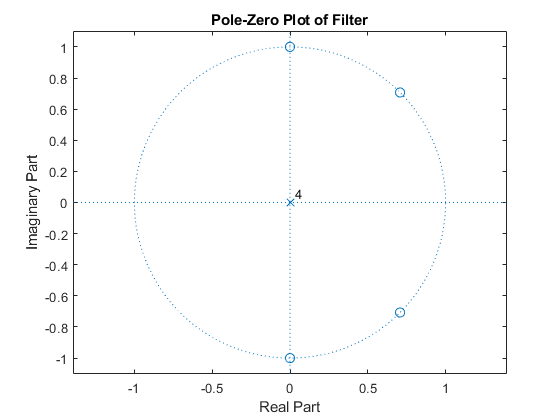 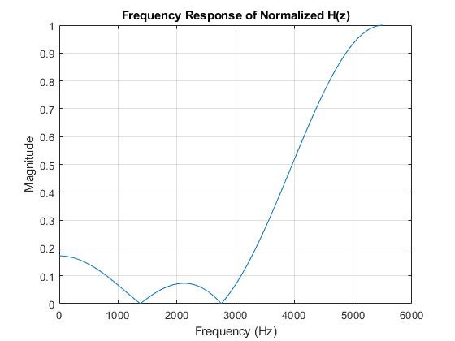 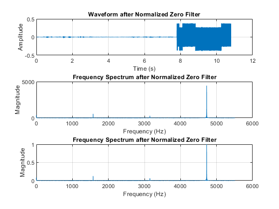 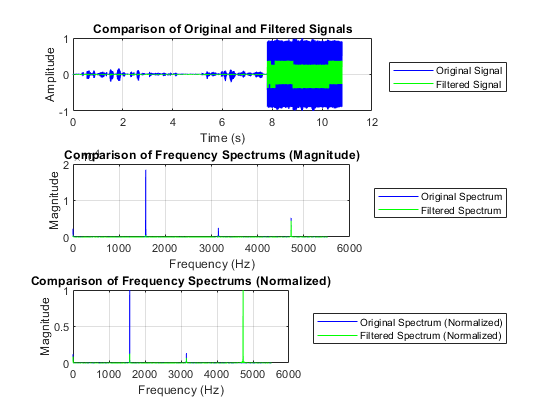
3) Use Zeros and poles
% Define zeros zero1 = exp(1j * pi / 4); zero2 = exp(-1j * pi / 4); zero3 = exp(1j * pi / 2); zero4 = exp(-1j * pi / 2); zeros = [zero1,zero2,zero3,zero4]; % Define poles pole1 = 0.9 * exp(1j * pi / 4); pole2 = 0.9 * exp(-1j * pi / 4); pole3 = 0.9 * exp(1j * pi / 2); pole4 = 0.9 * exp(-1j * pi / 2); poles = [pole1, pole2,pole3,pole4]; bb = poly(zeros); aa = poly(poles); % Normalize filter coefficients [HH, ww] = freqz(bb, aa, 1024, fs); dcGain = max(abs(HH)); bb = bb / dcGain; close all figure; zplane(bb, aa); title('Pole-Zero Plot of Filter'); figure; plot(ww, abs(HH)/dcGain); xlabel('Frequency (Hz)'); ylabel('Magnitude'); title('Frequency Response of Normalized H(z)'); grid on; % Filter audio data audioData_zero_and_pole_filter_result = filter(bb, aa, audioData); % Calculate frequency information of filtered signal freqAxis = linspace(0, fs/2, floor(n/2) + 1); filteredFFT = fft(audioData_zero_and_pole_filter_result); magnitudeFilteredFFT = abs(filteredFFT(1:floor(n/2)+1)); figure; subplot(3,1,1); % Subplot 1: Waveform plot(time, audioData_zero_and_pole_filter_result); xlabel('Time (s)'); ylabel('Amplitude'); title('Waveform after Normalized Zero Filter'); grid on; subplot(3,1,2); % Subplot 2: Frequency spectrum plot(freqAxis, magnitudeFilteredFFT); xlabel('Frequency (Hz)'); ylabel('Magnitude'); title('Frequency Spectrum after Normalized Zero Filter'); grid on; subplot(3,1,3); % Subplot 2: Frequency spectrum plot(freqAxis, magnitudeFilteredFFT / max(magnitudeFilteredFFT)); xlabel('Frequency (Hz)'); ylabel('Magnitude'); title('Frequency Spectrum after Normalized Zero Filter'); grid on; % show compare figure; subplot(3,1,1); plot(time, audioData, 'b'); hold on; plot(time, audioData_zero_and_pole_filter_result, 'g'); xlabel('Time (s)'); ylabel('Amplitude'); title('Comparison of Original and Filtered Signals'); legend('Original Signal', 'Filtered Signal'); legend('Location', 'eastoutside'); grid on; subplot(3,1,2); plot(freqAxis, magnitudeFFT, 'b'); hold on; plot(freqAxis, magnitudeFilteredFFT, 'g'); xlabel('Frequency (Hz)'); ylabel('Magnitude'); title('Comparison of Frequency Spectrums (Magnitude)'); legend('Original Spectrum', 'Filtered Spectrum'); legend('Location', 'eastoutside'); grid on; subplot(3,1,3); plot(freqAxis, magnitudeFFT / max(magnitudeFFT), 'b'); hold on; plot(freqAxis, magnitudeFilteredFFT / max(magnitudeFilteredFFT), 'g'); xlabel('Frequency (Hz)'); ylabel('Magnitude'); title('Comparison of Frequency Spectrums (Normalized)'); legend('Original Spectrum (Normalized)', 'Filtered Spectrum (Normalized)'); legend('Location', 'eastoutside'); grid on; % Save filtered audio audiowrite('SunshineSquare_zero_and_pole_filter_result.wav', audioData_zero_and_pole_filter_result, fs);
Warning: Data clipped when writing file.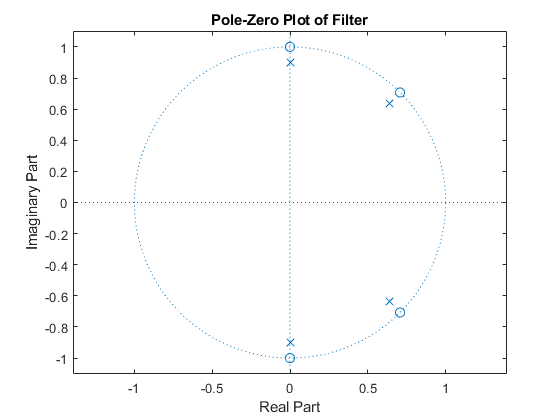 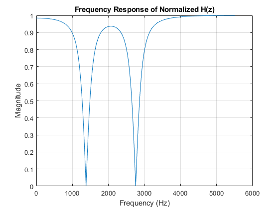 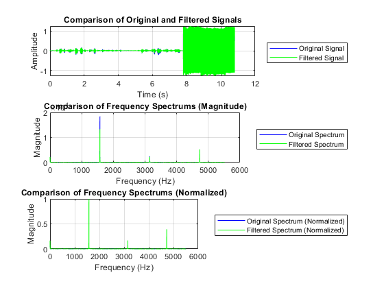
4) self design
% based on the magnitudeFFT, we can design % The number is based on the peak of the magnitude % Define zeros zero1 = exp(1j * 0.897598); zero2 = exp(-1j * 0.897598); zero3 = exp(1j * 1.79498); zero4 = exp(-1j * 1.79498); zero5 = exp(1j * 2.69279); zero6 = exp(-1j * 2.69279); zeros = [zero1,zero2,zero3,zero4,zero5,zero6]; % Define poles pole1 = 0.9 * exp(1j * 0.897598); pole2 = 0.9 * exp(-1j * 0.897598); pole3 = 0.9 * exp(1j * 1.79498); pole4 = 0.9 * exp(-1j * 1.79498); pole5 = 0.9 * exp(1j * 2.69279); pole6 = 0.9 * exp(-1j * 2.69279); poles = [pole1, pole2,pole3,pole4,pole5,pole6]; bb = poly(zeros); aa = poly(poles); % Normalize filter coefficients [HH, ww] = freqz(bb, aa, 1024, fs); dcGain = max(abs(HH)); bb = bb / dcGain; close all figure; zplane(bb, aa); title('Pole-Zero Plot of Filter'); figure; plot(ww, abs(HH)/dcGain); xlabel('Frequency (Hz)'); ylabel('Magnitude'); title('Frequency Response of Normalized H(z)'); grid on; % Filter audio data audioData_zero_and_pole_filter_result = filter(bb, aa, audioData); % Calculate frequency information of filtered signal freqAxis = linspace(0, fs/2, floor(n/2) + 1); filteredFFT = fft(audioData_zero_and_pole_filter_result); magnitudeFilteredFFT = abs(filteredFFT(1:floor(n/2)+1)); figure; subplot(3,1,1); % Subplot 1: Waveform plot(time, audioData_zero_and_pole_filter_result); xlabel('Time (s)'); ylabel('Amplitude'); title('Waveform after Normalized Zero Filter'); grid on; subplot(3,1,2); % Subplot 2: Frequency spectrum plot(freqAxis, magnitudeFilteredFFT); xlabel('Frequency (Hz)'); ylabel('Magnitude'); title('Frequency Spectrum after Normalized Zero Filter'); grid on; subplot(3,1,3); % Subplot 2: Frequency spectrum plot(freqAxis, magnitudeFilteredFFT / max(magnitudeFilteredFFT)); xlabel('Frequency (Hz)'); ylabel('Magnitude'); title('Frequency Spectrum after Normalized Zero Filter'); grid on; % show compare figure; subplot(3,1,1); plot(time, audioData, 'b'); hold on; plot(time, audioData_zero_and_pole_filter_result, 'g'); xlabel('Time (s)'); ylabel('Amplitude'); title('Comparison of Original and Filtered Signals'); legend('Original Signal', 'Filtered Signal'); legend('Location', 'eastoutside'); grid on; subplot(3,1,2); plot(freqAxis, magnitudeFFT, 'b'); hold on; plot(freqAxis, magnitudeFilteredFFT, 'g'); xlabel('Frequency (Hz)'); ylabel('Magnitude'); title('Comparison of Frequency Spectrums (Magnitude)'); legend('Original Spectrum', 'Filtered Spectrum'); legend('Location', 'eastoutside'); grid on; subplot(3,1,3); plot(freqAxis, magnitudeFFT / max(magnitudeFFT), 'b'); hold on; plot(freqAxis, magnitudeFilteredFFT / max(magnitudeFilteredFFT), 'g'); xlabel('Frequency (Hz)'); ylabel('Magnitude'); title('Comparison of Frequency Spectrums (Normalized)'); legend('Original Spectrum (Normalized)', 'Filtered Spectrum (Normalized)'); legend('Location', 'eastoutside'); grid on; % Save filtered audio audiowrite('SunshineSquare_self_design_filter_result.wav', audioData_zero_and_pole_filter_result, fs);
Warning: Data clipped when writing file.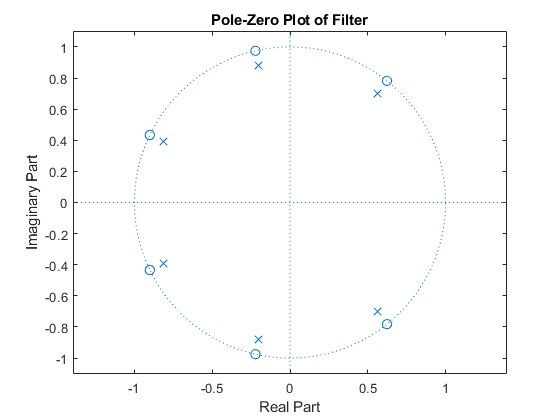 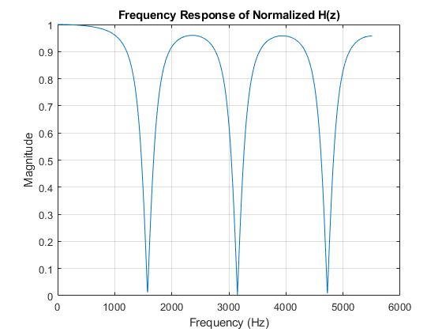 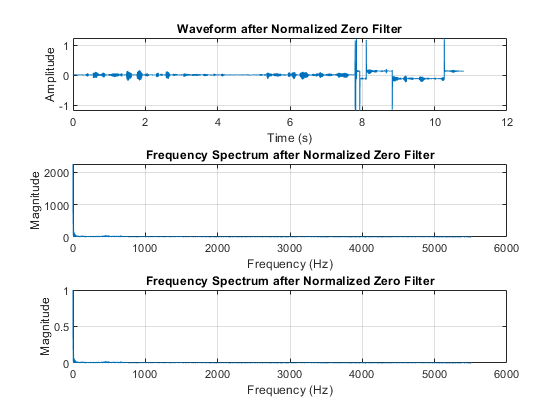 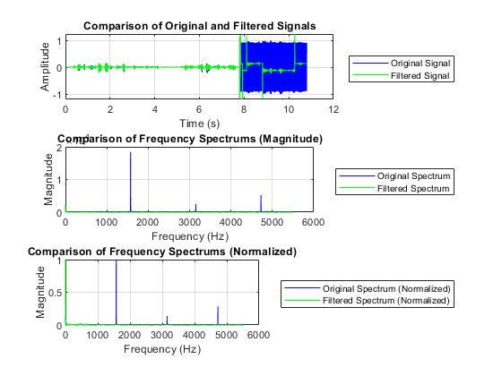
5) Low-pass Filter Design
% Filter specifications fc = 500; order = 6; % fair compare [bb_lp, aa_lp] = butter(order, fc/(fs/2), 'low'); % Frequency response of the filter [HH_lp, ww_lp] = freqz(bb_lp, aa_lp, 1024, fs); % Normalize the filter coefficients dcGain_lp = max(abs(HH_lp)); bb_lp = bb_lp / dcGain_lp; % Pole-zero plot close all figure; zplane(bb_lp, aa_lp); title('Pole-Zero Plot of Low-pass Filter'); % Frequency response plot figure; plot(ww_lp, abs(HH_lp) / dcGain_lp); xlabel('Frequency (Hz)'); ylabel('Magnitude'); title('Frequency Response of Low-pass Filter'); grid on; % Filter the audio data audioData_lowpass = filter(bb_lp, aa_lp, audioData); % FFT of the filtered signal filteredFFT_lp = fft(audioData_lowpass); magnitudeFilteredFFT_lp = abs(filteredFFT_lp(1:floor(n/2)+1)); % Plotting figure; subplot(3,1,1); plot(time, audioData_lowpass); xlabel('Time (s)'); ylabel('Amplitude'); title('Waveform after Low-pass Filtering'); grid on; subplot(3,1,2); plot(freqAxis, magnitudeFilteredFFT_lp); xlabel('Frequency (Hz)'); ylabel('Magnitude'); title('Frequency Spectrum after Low-pass Filtering'); grid on; subplot(3,1,3); plot(freqAxis, magnitudeFilteredFFT_lp / max(magnitudeFilteredFFT_lp)); xlabel('Frequency (Hz)'); ylabel('Magnitude'); title('Normalized Frequency Spectrum after Low-pass Filtering'); grid on; % Compare original and low-pass filtered signals figure; subplot(3,1,1); plot(time, audioData, 'b'); hold on; plot(time, audioData_lowpass, 'g'); xlabel('Time (s)'); ylabel('Amplitude'); title('Comparison of Original and Low-pass Filtered Signals'); legend('Original Signal', 'Low-pass Filtered Signal'); legend('Location', 'eastoutside'); grid on; subplot(3,1,2); plot(freqAxis, magnitudeFFT, 'b'); hold on; plot(freqAxis, magnitudeFilteredFFT_lp, 'g'); xlabel('Frequency (Hz)'); ylabel('Magnitude'); title('Comparison of Frequency Spectrums (Magnitude)'); legend('Original Spectrum', 'Low-pass Filtered Spectrum'); legend('Location', 'eastoutside'); grid on; subplot(3,1,3); plot(freqAxis, magnitudeFFT / max(magnitudeFFT), 'b'); hold on; plot(freqAxis, magnitudeFilteredFFT_lp / max(magnitudeFilteredFFT_lp), 'g'); xlabel('Frequency (Hz)'); ylabel('Magnitude'); title('Comparison of Frequency Spectrums (Normalized)'); legend('Original Spectrum (Normalized)', 'Low-pass Filtered Spectrum (Normalized)'); legend('Location', 'eastoutside'); grid on; % Compare Self-design and low-pass filtered signals figure; subplot(3,1,1); plot(time, audioData_zero_and_pole_filter_result, 'b'); hold on; plot(time, audioData_lowpass, 'g'); xlabel('Time (s)'); ylabel('Amplitude'); title('Comparison of Self-design and low-pass filtered signals'); legend('Self design filtered Signal', 'Low-pass Filtered Signal'); legend('Location', 'eastoutside'); grid on; subplot(3,1,2); plot(freqAxis, magnitudeFilteredFFT, 'b'); hold on; plot(freqAxis, magnitudeFilteredFFT_lp, 'g'); xlabel('Frequency (Hz)'); ylabel('Magnitude'); title('Comparison of Frequency Spectrums (Magnitude)'); legend('Self design filtered Spectrum', 'Low-pass Filtered Spectrum'); legend('Location', 'eastoutside'); grid on; subplot(3,1,3); plot(freqAxis, magnitudeFilteredFFT / max(magnitudeFilteredFFT), 'b'); hold on; plot(freqAxis, magnitudeFilteredFFT_lp / max(magnitudeFilteredFFT_lp), 'g'); xlabel('Frequency (Hz)'); ylabel('Magnitude'); title('Comparison of Frequency Spectrums (Normalized)'); legend('Self design filtered Spectrum (Normalized)', 'Low-pass Filtered Spectrum (Normalized)'); legend('Location', 'eastoutside'); grid on; % Save the filtered audio audiowrite('SunshineSquare_lowpass_order6_filter_result.wav', audioData_lowpass, fs);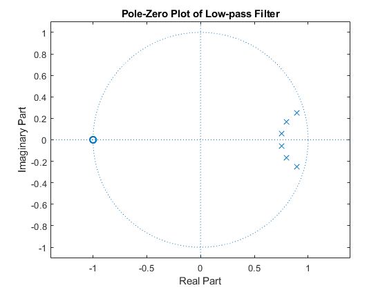 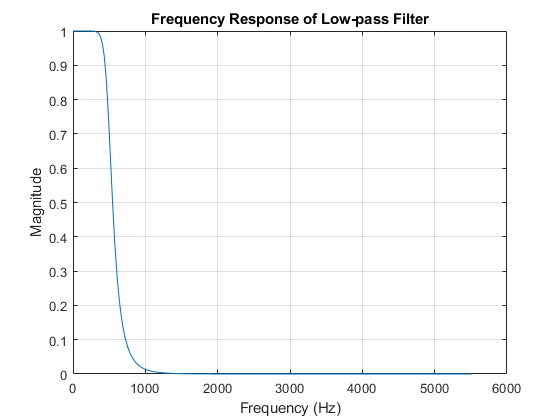 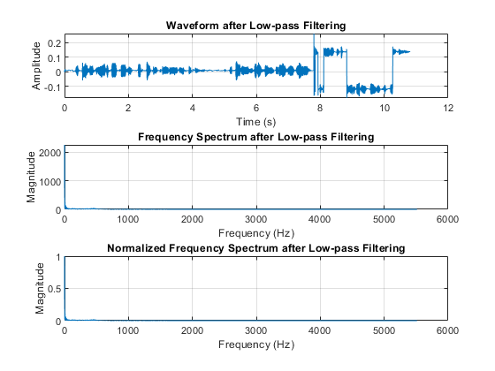 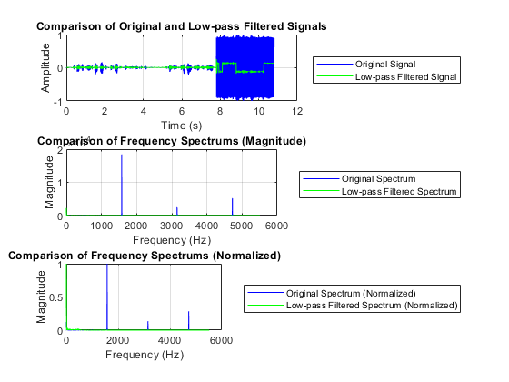 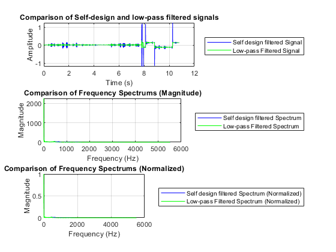
6) Low-pass Filter Design using FIR
fc = 500; order = 6; % Design FIR low-pass filter using fir1 bb_lp = fir1(order, fc / (fs / 2), 'low', hann(order + 1)); [HH_lp, ww_lp] = freqz(bb_lp, 1, 1024, fs); close all figure; zplane(bb_lp, 1); title('Pole-Zero Plot of FIR Low-pass Filter'); figure; plot(ww_lp, abs(HH_lp)); xlabel('Frequency (Hz)'); ylabel('Magnitude'); title('Frequency Response of FIR Low-pass Filter'); grid on; audioData_lowpass = filter(bb_lp, 1, audioData); filteredFFT_lp = fft(audioData_lowpass); magnitudeFilteredFFT_lp = abs(filteredFFT_lp(1:floor(n/2)+1)); figure; subplot(3,1,1); plot(time, audioData_lowpass); xlabel('Time (s)'); ylabel('Amplitude'); title('Waveform after FIR Low-pass Filtering'); grid on; subplot(3,1,2); plot(freqAxis, magnitudeFilteredFFT_lp); xlabel('Frequency (Hz)'); ylabel('Magnitude'); title('Frequency Spectrum after FIR Low-pass Filtering'); grid on; subplot(3,1,3); plot(freqAxis, magnitudeFilteredFFT_lp / max(magnitudeFilteredFFT_lp)); xlabel('Frequency (Hz)'); ylabel('Magnitude'); title('Normalized Frequency Spectrum after FIR Low-pass Filtering'); grid on; figure; subplot(3,1,1); plot(time, audioData, 'b'); hold on; plot(time, audioData_lowpass, 'g'); xlabel('Time (s)'); ylabel('Amplitude'); title('Comparison of Original and FIR Low-pass Filtered Signals'); legend('Original Signal', 'FIR Low-pass Filtered Signal'); legend('Location', 'eastoutside'); grid on; subplot(3,1,2); plot(freqAxis, magnitudeFFT, 'b'); hold on; plot(freqAxis, magnitudeFilteredFFT_lp, 'g'); xlabel('Frequency (Hz)'); ylabel('Magnitude'); title('Comparison of Frequency Spectrums (Magnitude)'); legend('Original Spectrum', 'FIR Low-pass Filtered Spectrum'); legend('Location', 'eastoutside'); grid on; subplot(3,1,3); plot(freqAxis, magnitudeFFT / max(magnitudeFFT), 'b'); hold on; plot(freqAxis, magnitudeFilteredFFT_lp / max(magnitudeFilteredFFT_lp), 'g'); xlabel('Frequency (Hz)'); ylabel('Magnitude'); title('Comparison of Frequency Spectrums (Normalized)'); legend('Original Spectrum (Normalized)', 'FIR Low-pass Filtered Spectrum (Normalized)'); legend('Location', 'eastoutside'); grid on; figure; subplot(3,1,1); plot(time, audioData_zero_and_pole_filter_result, 'b'); hold on; plot(time, audioData_lowpass, 'g'); xlabel('Time (s)'); ylabel('Amplitude'); title('Comparison of Self-design and FIR Low-pass Filtered Signals'); legend('Self Design Filtered Signal', 'FIR Low-pass Filtered Signal'); legend('Location', 'eastoutside'); grid on; subplot(3,1,2); plot(freqAxis, magnitudeFilteredFFT, 'b'); hold on; plot(freqAxis, magnitudeFilteredFFT_lp, 'g'); xlabel('Frequency (Hz)'); ylabel('Magnitude'); title('Comparison of Frequency Spectrums (Magnitude)'); legend('Self Design Filtered Spectrum', 'FIR Low-pass Filtered Spectrum'); legend('Location', 'eastoutside'); grid on; subplot(3,1,3); plot(freqAxis, magnitudeFilteredFFT / max(magnitudeFilteredFFT), 'b'); hold on; plot(freqAxis, magnitudeFilteredFFT_lp / max(magnitudeFilteredFFT_lp), 'g'); xlabel('Frequency (Hz)'); ylabel('Magnitude'); title('Comparison of Frequency Spectrums (Normalized)'); legend('Self Design Filtered Spectrum (Normalized)', 'FIR Low-pass Filtered Spectrum (Normalized)'); legend('Location', 'eastoutside'); grid on; % Save the filtered audio audiowrite('SunshineSquare_fir_lowpass_order6_filter_result.wav', audioData_lowpass, fs);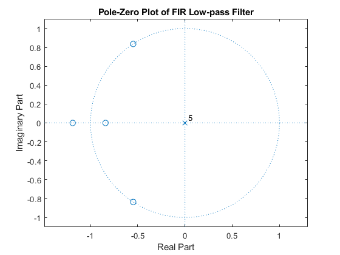 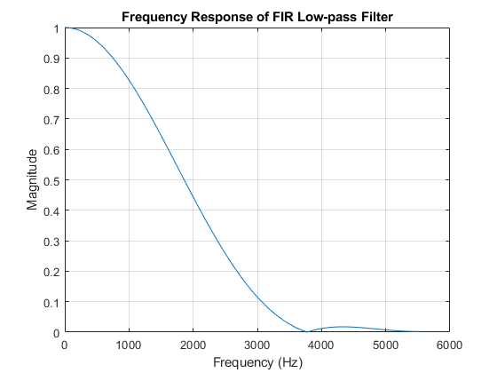 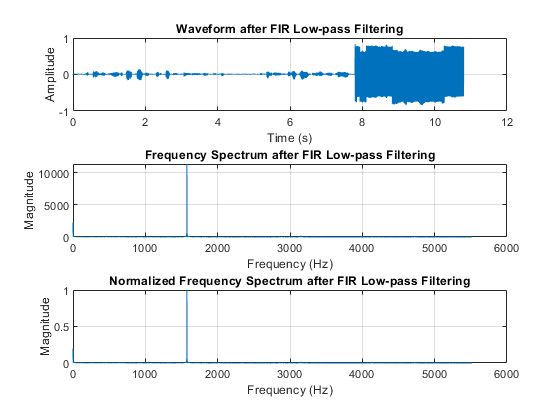 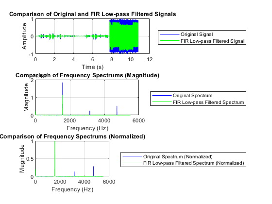 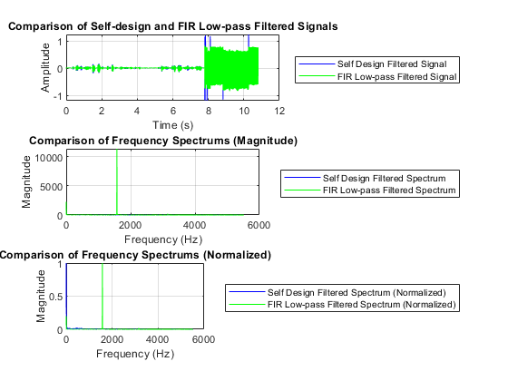
close all